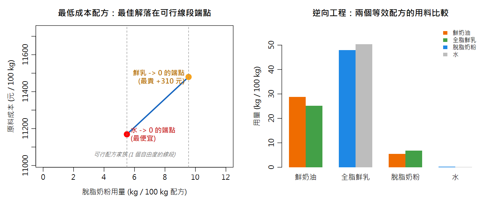

實戰應用：USDA FoodData Central 與配方計算 From Open Data to Formulation — Replicating TechWizard™ Workflows with Free Tools
老闆：「配方軟體一年授權 30 萬，你能不能不用它就做出營養標籤和最低成本配方？」這一章之後，你可以。
本章新詞先認識：FDC＝USDA 食品成分資料庫；質量平衡＝進＝出的質量守恆列式法；線性規劃＝在限制條件下找最便宜組合；overrun＝冰淇淋打入的空氣比例。
名詞卡住了？回 Ch0 名詞圖鑑 查白話解釋與比喻。
- 認識 USDA FoodData Central（FDC）的五種資料型、API 與整包 CSV 下載（CC0 公眾領域）
- 理解業界配方軟體 TechWizard™ 的兩大招牌功能，其實就是質量平衡聯立方程 + 加權平均
- 會用 R 的
solve()做目標導向配方（冰淇淋規格：脂肪 12%、MSNF 11%…） - 會做最低成本配方，並理解線性規劃「最佳解在端點」的直覺
- 會把配方加權成營養標籤（台灣每 100 g / 美國每份 66 g），並用 Atwater 4-4-9 檢核
- 會做逆向工程：由競品檢驗值反推等效配方，並指出解為何不唯一
13.1 FoodData Central：免費的世界級食品成分資料庫
FDC 是美國農業部（USDA）維護的食品成分資料庫總入口，資料以 CC0 公眾領域釋出 （使用只需註明出處），提供網頁搜尋、整包 CSV 下載、免費 API 三種取得方式。 五種資料型的品質定位截然不同——這正是 Ch3「數據品質」觀念的活教材：
| 資料型 | 內容 | 更新 | 教學定位 |
|---|---|---|---|
| Foundation Foods | USDA 自行分析，樣品層級＋完整採樣/分析後設資料 | 每年兩次 | 方法對照真值、不確定度討論的最佳素材 |
| SR Legacy | 傳統營養資料庫（分析+文獻+計算彙編），2018 年定稿 | 不再更新 | 配方計算最常用（本章採用） |
| Survey (FNDDS) | 國民營養調查 NHANES 用的食品/飲品 | 每兩年 | 膳食攝取評估 |
| Experimental | 與 USDA 合作的期刊研究數據 | 不定期 | 研究選讀 |
| Branded | 全球市售包裝食品的標籤資料 | 每月 | 標籤比較、逆向工程的題庫 |
13.2 教學對照表：把 TechWizard 的功能免費重現
| TechWizard™ 功能 | 官網對應範例 | 本章的免費重現（R 內建函數） |
|---|---|---|
| 目標導向配方 | Ice Cream | solve() 解質量平衡聯立方程（13.3） |
| 最低成本配方（AI 引擎） | Processed Cheese | 成本函數＋可行線段端點搜尋（13.4） |
| 營養標籤 / 規格書 | BBQ Sauce、Spice Blend | 配方加權平均＋捨入規則（13.5） |
| 逆向工程 | Reverse Engineer Ice Cream | 檢驗值→目標組成→再解一次配方（13.6） |
| 原料資料庫維護 | Ingredient Request Wizard™ | FDC API / CSV ＋ 供應商規格書（13.7） |
13.3 目標導向配方：冰淇淋的質量平衡
對照 TechWizard 官網 Ice Cream 範例的規格（每 100 kg 配方）： 脂肪 12%、非脂乳固形（MSNF）11%、砂糖 14%、玉米糖漿 3%、安定劑/乳化劑 0.5%， 剩下的 82.5 kg 由「乳原料＋水」湊足。設 c=鮮奶油、m=全脂鮮乳、s=脫脂奶粉、w=水：
脂 肪：0.3608c + 0.0325m + 0.0077s = 12
MSNF：0.0545c + 0.0865m + 0.9607s = 11 係數來自下表原料的 FDC 組成值（質量分數）
4 個未知數、只有 3 條方程式 → 存在「一個自由度」的整個配方家族！ 這是配方設計的本質：規格只給出可行範圍，還需要一個額外準則（例如成本最低）才能選出唯一配方。
迷你原料資料庫（摘錄自 FDC / SR Legacy）
| 原料 | NDB 編號 | 脂肪 % | MSNF % | 水分 % | 單價 元/kg（示教用虛構） |
|---|---|---|---|---|---|
| 鮮奶油（36%） | 01053 | 36.08 | 5.45 | 57.71 | 230 |
| 全脂鮮乳 | 01077 | 3.25 | 8.65 | 88.10 | 38 |
| 脫脂奶粉 | 01095 | 0.77 | 96.07 | 3.20 | 280 |
| 砂糖 | 19335 | 0 | — | 0 | 42 |
| 玉米糖漿 | 供應商規格 | 0 | — | 20 | 55 |
| 安定劑/乳化劑 | 供應商規格 | 0 | — | 0 | 850 |
13.4 最低成本配方：線性規劃的端點直覺
把「一個自由度」參數化成脫脂奶粉用量 s，每個 s 解一次 3×3 聯立方程（R 的 solve()），
就得到整條可行配方家族；再算每個配方的原料成本：

| 方案 | 鮮奶油 | 全脂鮮乳 | 脫脂奶粉 | 水 | 成本 元/100 kg |
|---|---|---|---|---|---|
| 最便宜（水→0 的端點） | 28.8 | 47.9 | 5.5 | 0.3 | 11,169 |
| 最貴（鮮乳→0 的端點） | 33.0 | 0.3 | 9.6 | 39.6 | 11,480 |
同一個規格，配方成本可以差 311 元/100 kg（+2.8%）—— 食品廠的毛利就藏在這種計算裡。TechWizard 的「AI 配方引擎」= 同樣邏輯， 只是原料與限制式多到需要單純法（simplex method）自動求解。
13.5 加權營養計算 → 營養標籤
TechWizard 標籤功能的本質：配方加權平均出每 100 g 營養值，再換算每份、套法規捨入規則。 把 13.4 的最便宜配方加權（並用 Atwater 係數 4-4-9 驗算熱量）：
| 營養素 | 每 100 g（台灣格式） | 每份 66 g（美國 FDA 格式） |
|---|---|---|
| 熱量 | 214 kcal | 140 kcal |
| 蛋白質 | 4.1 g | 3 g |
| 脂肪 | 12.0 g | 8 g |
| 碳水化合物 | 22.3 g | 15 g |
| 糖 | 20.7 g | 14 g |
| 鈉 | 85 mg | 55 mg |
13.6 逆向工程：從競品檢驗值反推配方
TechWizard 的招牌功能：買競品來檢驗，反推等效配方。情境：競品香草冰淇淋實驗室檢測 脂肪 10.8%、蛋白質 4.4%。乳蛋白約占非脂乳固形的 36%， 故 MSNF ≈ 4.4 / 0.36 = 12.2%。把這兩個值當新目標，重跑一次 13.3 的聯立方程：
| 配方 | 鮮奶油 | 全脂鮮乳 | 脫脂奶粉 | 水 | 成本 元/100 kg |
|---|---|---|---|---|---|
| 我方設計（12%F / 11%M） | 28.8 | 47.9 | 5.5 | 0.3 | 11,169 |
| 競品還原（10.8%F / 12.2%M） | 25.2 | 50.4 | 6.8 | 0.1 | 10,791 |
競品是「低脂高MSNF」結構，成本還便宜 378 元/100 kg——這就是競品分析的價值。
13.7 取得真資料：FDC API 與整包 CSV
- 到 fdc.nal.usda.gov/api-key-signup 免費申請 API 金鑰
- 用 foods/search 端點查詢（可限定資料型），例如奶油：
https://api.nal.usda.gov/fdc/v1/foods/search?api_key=KEY&query=butter,salted&dataType=SR%20Legacy&pageSize=1 - R 不需 JSON 套件：
readLines(url(...))抓回文字，regmatches + regexpr抽出"value":717（完整程式在下方，設RUN_ONLINE <- TRUE即可體驗） - 要整包資料做統計：到 Download Datasets 頁複製 ZIP 連結 →
download.file()→unzip()→read.csv("food.csv")（數十萬列，Ch1 的mean()/sd()直接派上用場） - 引用格式（CC0 要求註明出處）：U.S. Department of Agriculture, Agricultural Research Service. FoodData Central. fdc.nal.usda.gov
# ====== Ch13 USDA FDC x 配方計算 (完整版請下載 ch13_fdc.R) ======
# --- Part 1. 迷你原料資料庫 (摘自 USDA FoodData Central, SR Legacy, CC0) ---
ing <- data.frame(
name = c("鮮奶油","全脂鮮乳","脫脂奶粉","砂糖","玉米糖漿","安定劑"),
protein = c(2.05, 3.15, 36.16, 0, 0, 0),
fat = c(36.08, 3.25, 0.77, 0, 0, 0),
carb = c(2.79, 4.80, 51.99, 99.98, 78, 0),
ash = c(0.61, 0.70, 7.92, 0, 0, 0),
price = c(230, 38, 280, 42, 55, 850)) # 示教用虛構單價 元/kg
ing$msnf <- ing$protein + ing$carb + ing$ash # 非脂乳固形 (乳品慣用指標)
# --- Part 2+3. 目標導向 + 最低成本配方 (TechWizard Ice Cream 規格) ---
# 規格: 脂肪12 MSNF11 砂糖14 玉米糖漿3 安定劑0.5 -> 乳原料+水 = 82.5 kg
f_c <- .3608; f_m <- .0325; f_s <- .0077
n_c <- .0545; n_m <- .0865; n_s <- .9607
A <- rbind(c(1,1,1), c(f_c,f_m,0), c(n_c,n_m,0)) # 未知數(奶油,鮮乳,水)
balance_mix <- function(tf, tm, grid = seq(0, 12, .05)) {
out <- data.frame(smp=grid, cream=NA, milk=NA, water=NA, ok=FALSE, cost=NA)
for (i in seq_along(grid)) {
b <- c(82.5 - grid[i], tf - f_s*grid[i], tm - n_s*grid[i])
x <- tryCatch(solve(A, b), error = function(e) rep(NA_real_, 3))
out[i, 2:4] <- x
out$ok[i] <- !any(is.na(x)) && all(x >= -1e-9) # 用量不能是負的
if (out$ok[i]) out$cost[i] <- 230*x[1] + 38*x[2] + 280*grid[i] +
0.5*max(x[3], 0) + (14*42 + 3*55 + 0.5*850)
}
out
}
sol <- balance_mix(12, 11)
range(sol$smp[sol$ok]) #> 5.50 ~ 9.55 kg 的可行線段
best <- sol[which.min(sol$cost), ]
round(best[c("cream","milk","smp","water")], 1)
#> 奶油 28.8 | 鮮乳 47.9 | 奶粉 5.5 | 水 0.3
best$cost #> 11169 元/100kg (整個家族最低)
plot(cost ~ smp, data = sol, subset = ok, type = "l", lwd = 2,
col = "#1565C0", xlab = "脫脂奶粉 (kg)", ylab = "成本 (元/100kg)")
points(best$smp, best$cost, pch = 19, col = "red")
# 成本沿線段線性遞增 -> LP 最佳解必在端點 (TechWizard 配方引擎的核心直覺)
# --- Part 4. 加權營養計算 -> 標籤 ---
wt <- unlist(best[c("cream","milk","smp")])
prot <- sum(wt*c(2.05, 3.15, 36.16))/100
carb <- (sum(wt*c(2.79, 4.80, 51.99)) + 14*99.98 + 3*78)/100
sugar<- 14 + sum(wt*c(2.79, 4.80, 51.99))/100 + 3*0.26
na <- sum(wt*c(30, 43, 1010))/100
kcal <- 4*prot + 4*carb + 9*12 #> Atwater 4-4-9 = 213.6 kcal
serv <- 66/100 # FDA 冰淇淋每份 2/3 杯 = 66 g (已含 overrun 的空氣)
c(熱量 = floor(kcal*serv/10)*10, 蛋白質 = round(prot*serv),
脂肪 = round(12*serv), 碳水 = round(carb*serv),
糖 = round(sugar*serv), 鈉mg = round(na*serv/5)*5)
#> 140 kcal / 蛋白質3 / 脂肪8 / 碳水15 / 糖14 / 鈉55 —— 市售標籤就是這樣來的!
# --- Part 5. 逆向工程：由競品檢驗值反推配方 ---
msnf_est <- 4.4 / 0.36 #> 乳蛋白約占非脂固形 36% -> 12.2%
best_re <- balance_mix(10.8, msnf_est)
best_re[which.min(best_re$cost), c("cream","milk","smp","water","cost")]
#> 奶油25.2 鮮乳50.4 奶粉6.8 水0.1, 約 10,791 元 (低脂結構反而更便宜)
# 解不唯一: 檢驗不確定度 + 標籤捨入 + MSNF 推估假設 (呼應 Ch6~Ch8)
# --- Part 6. 有網路時：FDC API 抓真資料 (金鑰免費申請) ---
# key <- "你的金鑰" # fdc.nal.usda.gov/api-key-signup
# u <- paste0("https://api.nal.usda.gov/fdc/v1/foods/search?api_key=", key,
# "&query=butter%2Csalted&dataType=SR%20Legacy&pageSize=1")
# txt <- paste(readLines(url(u), warn = FALSE), collapse = "")
# regmatches(txt, regexpr('"nutrientName":"Energy"[^}]*"value":[0-9.]+', txt))
#> 奶油 Energy "value":717 kcal (整包 CSV 則到 Download Datasets 頁)
[1] 5.50 9.55
cream milk smp water
111 28.8 47.9 5.5 0.3
[1] 11168.97
熱量 蛋白質 脂肪 碳水 糖 鈉mg
140 3 8 15 14 55
cream milk smp water cost
136 25.24753 50.42204 6.75 0.08042593 10791.01② 自由度用成本最低收斂：線性目標函數的最佳解在端點，先檢查端點再談最佳化
③ 標籤 = 加權平均 + 法規捨入；熱量用 Atwater 4-4-9 交叉檢核
④ 逆向工程的解必須連同不確定度一起解讀，別把它當唯一真值
⑤ 原料資料 = FDC 公開資料 + 供應商規格書，兩者缺一不可
📊 Excel 也會算：配方計算
| 任務 | Excel 做法 |
|---|---|
| 質量平衡配方 | 設各原料用量為變數格，營養合計用 =SUMPRODUCT(用量欄, 成分欄)，開 Solver 設目標＋限制 |
| 最低成本配方 | 目標儲存格=SUMPRODUCT(用量,單價)，Solver「最小化」，限制=營養規格上下限 |
| 營養標籤 | 各原料「每100g 成分」× 用量加總：=SUMPRODUCT(...) |
solve()（解方程）與端點搜尋，在 Excel 就是 Solver 的「求解」。兩者答案相同——驗證了「商業軟體沒有魔法」。13.8 參考文獻
- U.S. Department of Agriculture, Agricultural Research Service. FoodData Central. fdc.nal.usda.gov（CC0 公眾領域；本章原料組成摘錄自 SR Legacy：NDB 01053、01077、01095、19335）.
- Owl Software. TechWizard™ Examples. owlsoft.com/techwizard/techwizard-examples（BBQ Sauce、Pizza、Spice Blend、Ice Cream、Reverse Engineer、Processed Cheese 六範例，附 PDF/影片）.
- Goff, H. D.; Hartel, R. W. Ice Cream, 7th ed.; Springer: New York, 2013.（冰淇淋質量平衡配方、MSNF 定義與 overrun 計算之依據）.
- Smith, J. S. Evaluation of Analytical Data. In Nielsen’s Food Analysis, 6th ed.; Ismail, B. P., Nielsen, S. S., Eds.; Springer, 2024; Chapter 4.（本課程數據品管統計之主軸教材）.